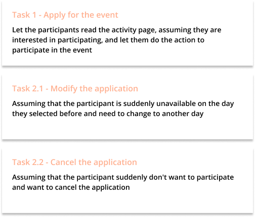
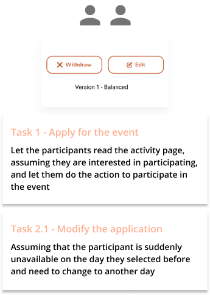
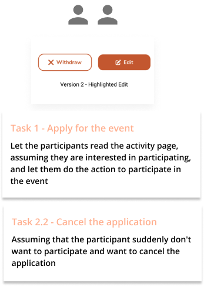
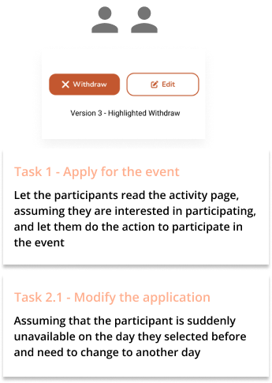
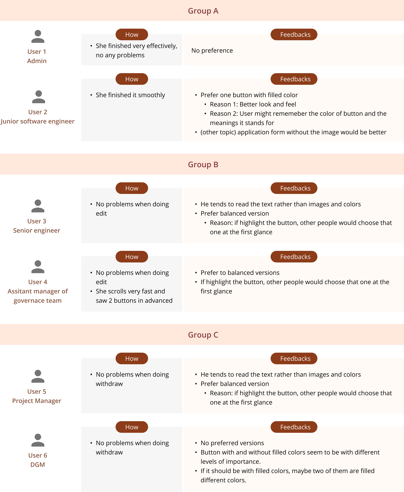
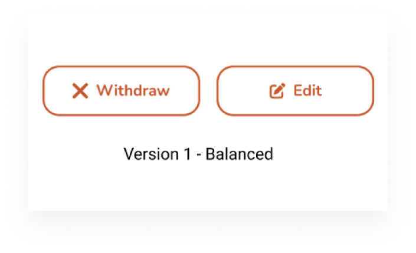

Usability Testing Case Study

Background
We need to enhance an Intranet-like App, which is allowing the comapny to send messages, employee discounts, and more. Now a volunteer/event enrolment feature is added, so that colleagues can use this App to register for activities they are interested in.
User Flow
- View details of activity in this page
- If you are interested in the activity, fill in the form press “Apply” for enrolling this activity
- It will change to read-mode after submission
- If you want to change the timeslot or other information, press “Edit” and go back to edit-mode to revise. After pressing “Confirm” to submit revision, and go back to read-mode.
- If you want to cancel the submission, press “Withdraw” to cancel
Problems
There are two actions that the user can do on the submitted activity detail page. One is edit and the other is withdraw. Since the importance level are the same for these two actions, we recommend that the two buttons use the same style.
But this is what vendor's proposal, with the explaination that if the two buttons use the same style, it is difficult to distinguish them, so their design is either to have both border styles but one big and one small, or one border style and the other no border.
After discussion with stakeholders, we think that the button style is inconsistent anyways, we didn't want to apply any special design to emphasize either of them. That is to say, both buttons should be the same size and style, which is with border, and if the edit has an icon, then an icon should be added to the withdraw.
Since there are different reasons for the design statement, it is impossible to say who is right and who is wrong. We can only choose the method that is most suitable for users. Therefore, I decided to test it out with a small usability testing.
Goals
Validate the following questions
- If these two buttons use the same style, will users feel that there is a problem in using them?
- And test if you use different styles, will it affect the user's choice?
My Role
Designer (me) | Moderator | Observer & Coordinator
- Briefing, explaining and guiding participants during the research process
- Setting up the testing prototype, venue, observing participants, recording video and taking notes.
Process
Preparation
Research Plan
Because the time is too tight, I did not write down the research plan in detail, but the most important thing is to figure out how many situations to test. My plan is to use 3 versions and design different tasks to test.
- Two buttons are the same style - design a task to let some users do edit and some do withdraw, and see if they are successful/failed
- Edit button with filled style - design task to let users do withdraw, see if they are successful/failed
- Withdraw button uses filled style - design task to let users do edit, see if they are successful/failed
Clarify my confusion
In fact, this is my first time doing usability testing to find the answer, so I asked seniors for their opinions in a designer group. They replied that the 3 test settings I came up with are very likely to be 100% successful. 😂 It is very low probability for letting a user to do one or two clicks. The task needs to be designed for a high probability to be failed. This is the question I need to think about.
My questions
After getting advice from seniors, I was also thinking.
- Do I need to make the entire prototype , and make the task a little more complicated then do usability testing?
- Since some tasks are designed for participants to do for errors, so should these tasks be designed more complicated or less relevant ?
- What if the participants have unnecessary branches when doing tasks? That is to say,
Although here are still a lot of questions in my mind, I can't ask too much detials. So, I decided to do it first! Try it out first, and then improve after getting experience! 💪if there is no link where he wants to click, will it affect the effect of the entire test?
Prototype
Due to time constraints, I can only use the mockup provided by the vendor and roughly modify it. Three cases were done:
- Did you have any difficulties in using it?
- How is the button style different from the app you usually use?
- How do colored buttons make you feel?
- Which version do you prefer? and Why?
Tasks

Follow-up Questions:
- Two buttons with the same style
- Edit button with filled style
- Withdraw button with filled style
Logistics
Brief and explanation
- This is a small usability test, I will video it
- Explain that this is a new feature of an app of this company, users can use this feature to participate in activities that they are interested in
Do the task
- let the participants complete the corresponding tasks
- Each person has 2 tasks to complete
Follow up questions
- Ask followup questions to find out what they think
- Show them the 3 versions, explain the design concept, and get their thoughts on the design of the 3 versions
- Thanks for their participation, their opinions are invaluable
Run the Sessions
Due to split office, I can only find 6 participants. 😂 But let's try!
Group A
Group B
Group C
During the sessions

- Similar to the planned logistics, it only took about 5 minutes for each participant to complete it! 😄
- After each participants, simply write down the result and feedback
Notes

Result & Outcome
I presented the whole testing logic and idea, the final result, and the feedback from the participants to the stakeholders. In the end, our decision was to use the original idea - balanced version two buttons with the same style with icon and text.
Selected Version
Reasons
The reason is similar to our assumption:
- Because neither of the two buttons is more important
- We don't want to use two filled styles because it feels too heavy
- The user will read the text of the button before making a decision
Lessons
1. The entire prototype must be tested correctly before running the session.
When I was doing user3, I just didn't pay attention to whether I returned to the original page, which resulted in the loss of a participant's place! That would be a pity.
2. The prototype should use real data as much as possible, so that the interviewees can be more engaged.
One participant noticed on the way that the date to participate in the event has expired. In addition, this time, due to time constraints, I did not let the user enter every item in the form, but pre-filled it , which also affects the level of engagement of participants because they would think it's fake anyway.
3. During testing, many different/unexpected situations may arise.
For example, there will be some participants who do not follow the task you describe step by step, s/he will keep scrolling to see other content, then he will see the button in advanced, then the result may be biased
4. User of different ages and different positions
- Due to time constraints and pandemic peirod, I did not screen the respondents rigorously, because all colleagues will use this app, so I only found some colleagues in the IT department to do the test.
- If I have time and resources, maybe I could find some colleagues of different ages and different positions to do the test, such as the auntie working in the front line
5. The value of the user's feedback is greater than the result of completing the task.
Due to the results of these tests, as senior expected, all were 100% successful, and the participants did not feel any difficulties/problems/disadvantages because of any version. But their insights for the button color are more interesting.
- A colleague thinks that using buttons of different styles will make the user remember what the color-filled button is for, and he will remember it next time he uses it again.
- While someone thinks it will mislead people more and tend to press down
6. Really have to keep training.
Even to the last participant, when I describe and ask questions, I accidentally asked some biased questions, or use some guiding/misleading keywords when describing. For example: When I described the second task, I said, if you suddenly have no time to participate in this activity, how do you withdraw? Immediately after I asked, I felt like I was wrong.
Although it was a small usability test, I learned something interesting. Although I don't know if the result is the best, but after discussion, we believed that this is the best design at present. Looking forward to the next new research/testing experience! UX is really fun.